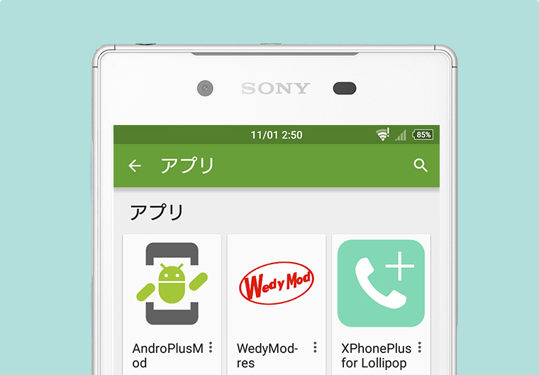

AndroPlus Kernel
for Xperia X Performance
for Xperia X Performance
Requirements
- Xperia X Performance [F8131 and F8132]
- stock 6.0
- 35.0.A.1.227 -> v1 -
- Unlocked bootloader

How to install
1. Reboot into recovery or bootloader
2. Flash kernel using recovery or fastboot
Recovery - Install zip
fastboot - Extract boot.img from zip and run this command:
fastboot flash boot boot.img
fastboot flash recovery TWRP-3.0.2-4-F8132.img
4. Done!
To root and install Xposed, you should flash BETA-SuperSU-v2.67 and xposed-v86-sdk23-arm64.zip in TWRP.
First/second boot will be bootloop and take some time to boot up correctly.
Changelog
v04a
Fixed CVE-2016-3813, CVE-2016-2465, CVE-2016-2489
v04
Fixed CVE-2016-2059
dm-crypt: increase threads
v03
Added KCAL (thanks @savoca, @faux123, @flar2, @tbalden)
Added Adrenoboost (thanks @tbalden)
Added support for USB keyboard / mouse function (thanks pelya)
Fixed CVE-2016-2547 (merged changes from 35.0.A.1.244)
v02
Now you can load TWRP!
To use TWRP:
1. Flash TWRP in fastboot
2. Press volume up or down key when LED is orange
3. Enter password/pin/pattern to decrypt your data.
*NOTE: TWRP 3.0.2-2 only supports encryption with password/pin/pattern on boot for now, so you have to set password/pin/pattern in Settings -> Security -> Screen lock -> Select password/pin/pattern -> Select "Require (password/pin/pattern) to start device"
Updated version code to support 35.0.A.1.238
* You should disable software update app to prevent persistent update notification. It says your system is not up to date when it finds new OTA, but actually minor update don't need kernel update. Also you can't apply OTA after bootloader unlocking.
Added patch to allow clients to get small buffers (1ms) for lowest latency
v01
Disabled DM_VERITY, force module sig and CORESIGHT (debugging)
Added DRM patch
(please delete
once to enable patch)
Added alucard cpu governor
Added additional TCP cong algorithms
Some GPU related patch
I/O scheduler BFQ, SIO and FIOPS
Added toggle for software crc and wlan wakelocks
ric disabled
insecure adb
--------------------------------------
Fixed CVE-2016-3813, CVE-2016-2465, CVE-2016-2489
v04
Fixed CVE-2016-2059
dm-crypt: increase threads
v03
Added KCAL (thanks @savoca, @faux123, @flar2, @tbalden)
Added Adrenoboost (thanks @tbalden)
echo "2" > /sys/class/kgsl/kgsl-3d0/devfreq/adrenoboost
0 -> off, 1 -> smooth/battery friendly, 2 -> stronger, 3 -> aggressive
You can use Xperia as USB keyboard / mouse with this app: https://play.google.com/store/apps/details?id=remote.hid.keyboard.client
v02
Now you can load TWRP!
To use TWRP:
1. Flash TWRP in fastboot
fastboot flash recovery TWRP-3.0.2-2-F8132-20160714.img
3. Enter password/pin/pattern to decrypt your data.
*NOTE: TWRP 3.0.2-2 only supports encryption with password/pin/pattern on boot for now, so you have to set password/pin/pattern in Settings -> Security -> Screen lock -> Select password/pin/pattern -> Select "Require (password/pin/pattern) to start device"
Updated version code to support 35.0.A.1.238
* You should disable software update app to prevent persistent update notification. It says your system is not up to date when it finds new OTA, but actually minor update don't need kernel update. Also you can't apply OTA after bootloader unlocking.
Added patch to allow clients to get small buffers (1ms) for lowest latency
v01
Disabled DM_VERITY, force module sig and CORESIGHT (debugging)
Added DRM patch
(please delete
/data/credmgr/credmgr.db
Added alucard cpu governor
Added additional TCP cong algorithms
Some GPU related patch
I/O scheduler BFQ, SIO and FIOPS
Added toggle for software crc and wlan wakelocks
ric disabled
insecure adb
--------------------------------------
Source
More from AndroPlus

FTF for Japanese Xperia
Mega collection of FTFs for Japanese models. If you have FTF which is not listed on the website, please send me via OneDrive or PM me on xda.


Get my Xposed modules for Xperia
Simple and effective Xposed modules for Xperia devices - you can enable hidden features and mods with one tap.

Go to my blog, AndroPlus.org
My blog for Xperia related information. Sorry, but most blog posts are only displayed in Japanese.